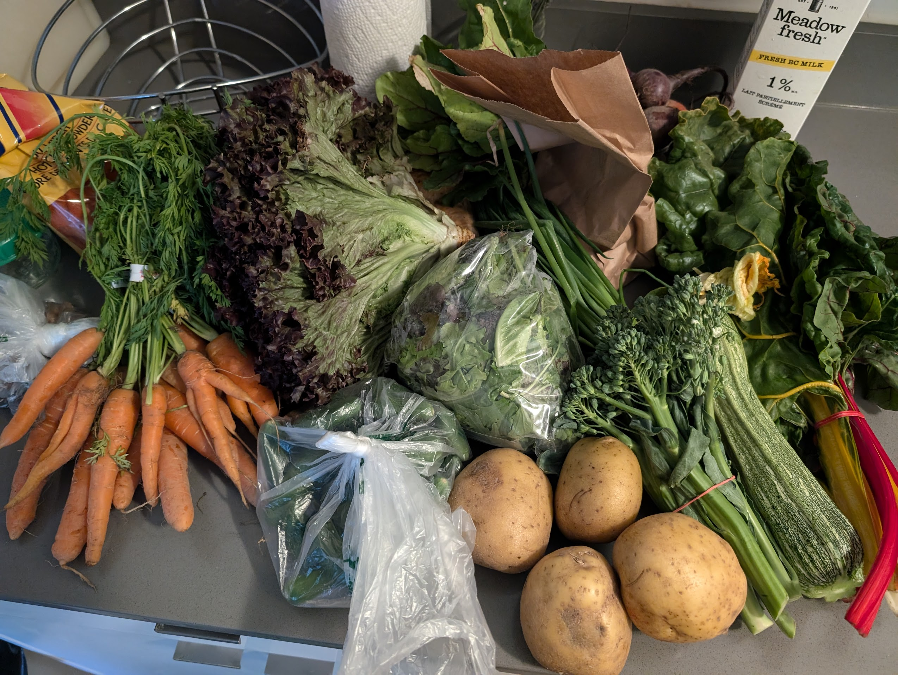
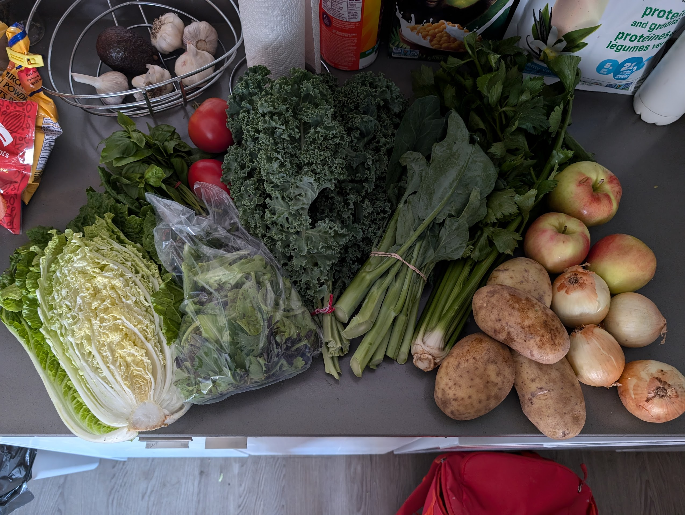

Febraury 23, 2025
Mara Solen
Since 2021, part of my Friday routine in the middle 5-6 months of the year has been going to Collingwood Neighbourhood House between 4 and 6 pm to pick up a box of vegetables provided by Fresh Roots. Starting in 2022, the people running the program sent out emails describing what vegetables we'd be getting (other than week 3 of season 1 of 2022!).
The vegetable varieties come from a variety of places around the world, but are all grown on farm plots at schools in Greater Vancouver. I've gotten a lot of vegetables that I'd never even heard of through this program, and a lot of varieties of more common vegetables that subverted my expectations!
A photo of my vegetable haul from July 19, 2024, which was week 8 of season 1 for that year! Yes, even the milk was part of the haul!
The weekly vegetable hauls were typically too much for one person, so I'd either freeze some items, cook then freeze some items, invite friends over to eat them with me, or give them to my friends. One of the reasons that there was always so much food was that there were almost always additional items (from sources other than Fresh Roots) that weren't mentioned in the emails, from vegetables and fruits like potatoes, carrots, and apples, to dairy products like milk, to baked goods like bread and desserts.
A photo of my vegetable haul from September 20, 2024, which was week 7 of season 2 for that year! The apples here are an example of an item not mentioned in the email but given out as part of the box.